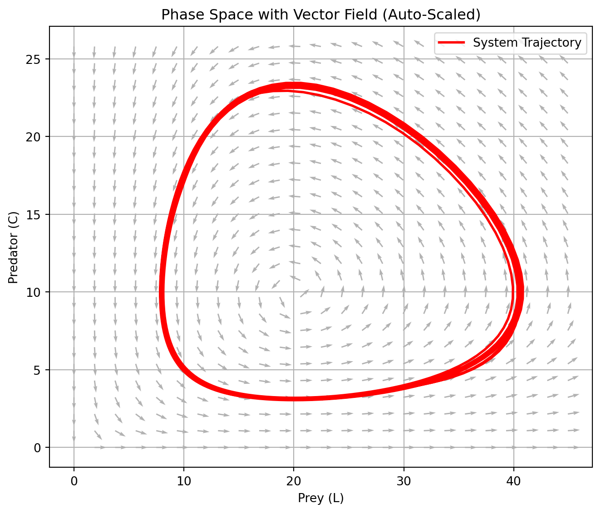
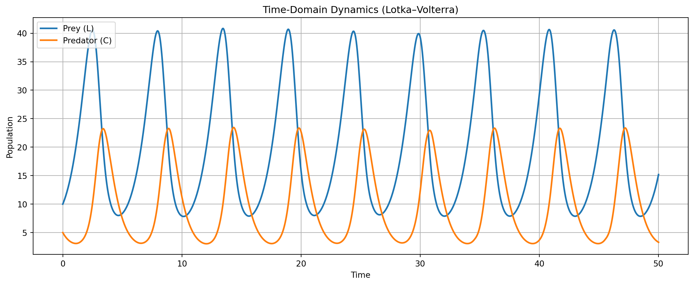
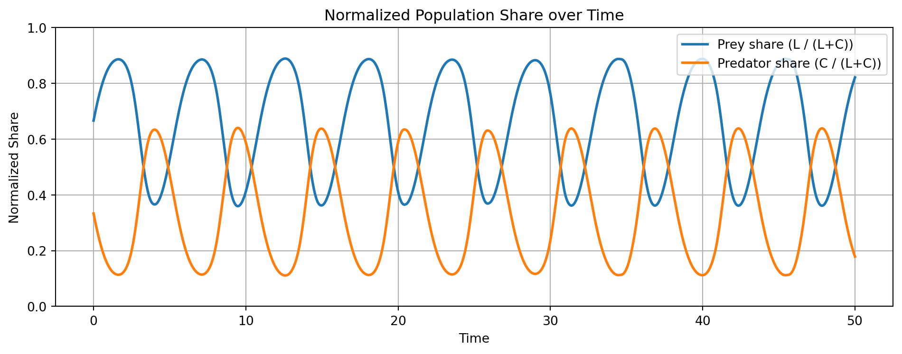

Let \(\mathbf{x} = (x, y)\) denote the population levels of two interacting species—prey (\(x\)) and predator (\(y\)). The classical Lotka–Volterra equations describe their nonlinear dynamics as:
where all parameters \(a_{ij} > 0\) represent positive interaction or decay rates. This defines a closed, two-dimensional autonomous system on the positive orthant \(\mathbb{R}_+^2\).
There are no external shocks, migrations, or species mutations—only endogenous interaction between predator and prey. The predator grows by consuming the prey; the prey reproduces in the absence of predation.
This system exhibits a distinctive dynamical feature: closed orbits in the phase plane. That is, solutions cycle indefinitely without converging to a fixed point or diverging to infinity. This reflects the conservative nature of the system—total “interaction energy” is preserved, and the system perpetually oscillates.
Remarks: These closed cycles correspond, in the frequency domain, to dominant harmonic modes—i.e., a natural periodicity. From a systems-theoretic perspective, this allows interpretation via Fourier decomposition, where the cyclical behavior of populations maps to periodic oscillators in signal processing.
Thus, the Lotka–Volterra model offers a rich entry point for understanding non-equilibrium dynamics, nonlinear feedback, and structural cycles—core features of many biological and economic systems.
Code
# Simulation Plan# 1. Vector Field + Trajectory (Auto-Scaled)# 2. Time-Domain Dynamics (Population Levels)# 3. Normalized Time-Series (Prey vs. Predator Share)import numpy as npimport matplotlib.pyplot as pltfrom scipy.integrate import solve_ivp# 이 모형의 궤적은 보존계(conservative system)에서 closed orbit을 형성.# 시간 신호(time series)의 Fourier transform이 주파수 영역(frequency domain)에서 고유한 dominant cycle을 갖는다.# Lotka–Volterra Parametersa11 =1.0# prey natural growth ratea12 =0.1# prey loss due to predatora21 =0.075# predator growth due to preya22 =1.5# predator natural decay# Define the ODE systemdef lotka_volterra(t, y): L, C = y dLdt = a11 * L - a12 * L * C dCdt = a21 * L * C - a22 * Creturn [dLdt, dCdt]# Time grid and solveL0, C0 =10, 5t_span = (0, 50)t_eval = np.linspace(t_span[0], t_span[1], 1000)sol = solve_ivp(lotka_volterra, t_span, [L0, C0], t_eval=t_eval)t, L, C = sol.t, sol.y[0], sol.y[1]# -------- 1. Vector Field + Trajectory (Auto-Scaled) --------# Dynamic range based on solutionL_max =max(L) *1.1# add 10% marginC_max =max(C) *1.1L_vals = np.linspace(0, L_max, 25)C_vals = np.linspace(0, C_max, 25)L_grid, C_grid = np.meshgrid(L_vals, C_vals)# Recompute vector field on new griddL = a11 * L_grid - a12 * L_grid * C_griddC = a21 * L_grid * C_grid - a22 * C_gridmag = np.sqrt(dL**2+ dC**2)dL_norm = dL / (mag +1e-8)dC_norm = dC / (mag +1e-8)# Plotplt.figure(figsize=(7, 6))plt.quiver(L_grid, C_grid, dL_norm, dC_norm, angles='xy', color='gray', alpha=0.6)plt.plot(L, C, 'r', linewidth=2, label="System Trajectory")plt.xlabel("Prey (L)")plt.ylabel("Predator (C)")plt.title("Phase Space with Vector Field (Auto-Scaled)")plt.legend()plt.grid(True)plt.tight_layout()plt.show()# -------- 2. Time-Domain Dynamics (Level) --------plt.figure(figsize=(12, 5))plt.plot(t, L, label="Prey (L)", linewidth=2)plt.plot(t, C, label="Predator (C)", linewidth=2)plt.title("Time-Domain Dynamics (Lotka–Volterra)")plt.xlabel("Time")plt.ylabel("Population")plt.grid(True)plt.legend()plt.tight_layout()plt.show()# -------- 3. Normalized Dynamics (Share) --------l_t = L / (L + C)c_t = C / (L + C)plt.figure(figsize=(10, 4))plt.plot(t, l_t, label="Prey share (L / (L+C))", linewidth=2)plt.plot(t, c_t, label="Predator share (C / (L+C))", linewidth=2)plt.title("Normalized Population Share over Time")plt.xlabel("Time")plt.ylabel("Normalized Share")plt.ylim(0, 1)plt.grid(True)plt.legend()plt.tight_layout()plt.show()



2 Closed System Dynamics
The guiding question of any dynamical system is deceptively simple:
“Given enough time, where does the system go?”
The conventional mathematical answer is that it converges to a steady-state path—a trajectory in which the internal forces of the system reach dynamic balance. Yet in closed systems, this “steady-state” is often mistaken for an indicator of optimality or efficiency. In reality, it is simply an outcome permitted by the structure, not selected for its virtue.
Historically, equilibrium emerged in static contexts: balance of forces in classical mechanics, concentration in chemical equilibrium, or price equalization in Walrasian economics. These notions carried an implicit assumption of desirability: what is balanced is often assumed to be good. But in dynamical systems, particularly those expressed as vector fields, equilibrium must be reinterpreted. The long-run behavior may include fixed points (sinks, saddles, sources), or more complex attractors like limit cycles, quasi-periodic orbits, or chaotic regimes. The steady-state path is not a normative endpoint—it is a constraint-compatible attractor, shaped by the system’s geometry.
In our context, a steady-state is defined as a location in the system’s state space where the vector field vanishes: \[
\dot{\mathbf{x}} = f(\mathbf{x}) = 0,
\] or, more broadly, where the system’s flow settles into a repeating or invariant configuration governed by internal dynamics alone.
But crucially, in social and economic systems, the existence of such a steady-state does not justify its moral legitimacy. A dynamical system may converge toward labor extinction or monopolized capital reproduction—not because these are efficient or just, but because they are structurally encoded. That is:
Persistence is positional, not performative. Steady-states do not signal merit—they expose geometry.
We formalize our model within the general structure of an autonomous system:
Definition (Autonomous System):
A system is autonomous if its evolution depends solely on state, not time: \[
\dot{\mathbf{x}} = f(\mathbf{x}), \quad \mathbf{x}(0) = \mathbf{x}_0,
\] where \(f : \mathbb{R}^n \rightarrow \mathbb{R}^n\) is smooth.
Such systems are closed if no external forcing, structural shocks, or additional dimensions intervene. These assumptions imply that the system’s phase space is governed by internal logic alone.
Assumption 1 (Autonomy): The vector field \(f\) is time-invariant: \(\partial f / \partial t = 0\). Assumption 2 (Closure): All evolution arises from the existing state; no new variables or information enter.
These assumptions are not cosmetic—they define a world in which only internally available motion is possible.
Accordingly, the state space\(\mathcal{M}\) is typically modeled as a smooth manifold, encoding both geometric constraints and domain-specific feasibility:
In ecology, \(\mathbb{R}_+^n\) enforces non-negativity.
In replicator dynamics, the unit simplex\(\Delta^{n-1}\) ensures probabilistic normalization: \(\sum x_i = 1\).
In capital-labor systems, we may constrain motion to the set of feasible capital/labor ratios or normalized wealth shares.
The manifold does not just host the system—it constrains its fate.
Geometry is not inert background; it is active architecture.
As a canonical illustration, consider a discrete-time Markov chain: \[
\mathbf{x}_{t+1} = P \mathbf{x}_t,
\] where \(P\) is a row-stochastic matrix and \(\mathbf{x}_t \in \Delta^{n-1}\). The state evolves entirely within the simplex, preserving closure and total mass.
The invariant distribution\(\mathbf{x}^*\) satisfies \(P \mathbf{x}^* = \mathbf{x}^*\).
The transition is internal, memoryless, and fully endogenous.
This analogy demonstrates that both deterministic continuous-time systems (e.g., ODEs) and stochastic discrete-time systems (e.g., Markov chains) operate under the same architectural logic:
Change is allowed only within structure Innovation is not generated—it is assumed absent
Thus, when economic models use “equilibrium” to describe such systems, the term often smuggles in normative meaning under structural constraints. Our reformulation rejects this conflation. In our model:
The steady-state may represent labor extinction.
Capital may persist by structural inertia.
Feedbacks may reinforce inequality even without growth.
The central insight is that equilibrium is not a justification. It is a geometric consequence.
The system does not select for good outcomes—it selects what fits according to the system’s pre-existing structure. Equilibrium in a real dynamic model is not a name for a desirable or normatively fair path—as it often appears in unrealistic normative models—but rather the ideal limit of motion under realistically imposed constraints. It is where the system stops—not because it ought to—but because it can proceed no further within the model’s structure.
3 Normalization
from Levels to Shares: ODEs as Markov-like Systems
In many economic or ecological models, the system is initially formulated in absolute levels. Consider a general two-dimensional ODE system describing the interaction of two populations—such as labor (\(L\)) and capital (\(C\)), or prey and predator:
This level-based description captures total quantity dynamics. However, in many contexts, what matters is not the absolute size of each group but their relative share in the system. For this, we define normalized states:
This equation takes the exact form of replicator dynamics, familiar from evolutionary game theory. It describes the differential success of one component relative to the population-weighted average. Many nonlinear level-based systems can be recast as share-based, constrained systems evolving on a simplex.
Generalizing to \(n\)-dimensional systems: suppose we have \(\mathbf{x}(t) = (x_1, \dots, x_n) \in \mathbb{R}_+^n\), and define normalized shares:
which is again replicator-type dynamics—a nonlinear but share-preserving flow over the simplex \(\Delta^{n-1}\).
Now consider the special case where the original system is linear:
\[
\dot{\mathbf{x}} = A \mathbf{x}, \quad \text{with } A \text{ a non-negative matrix}.
\]
After normalization, the system evolves as:
\[
\dot{\tilde{\mathbf{x}}} = \tilde{\mathbf{x}} \cdot (A - \bar{a} I),
\]
where \(\bar{a} = \tilde{\mathbf{x}}^\top A \mathbf{1}\) is the average growth rate. This dynamics mimics the evolution of a discrete-time Markov chain in continuous time—particularly when \(A\) is column-stochastic (or conserves total mass, i.e., \(\sum_i \dot{x}_i = 0\)).
Key Structural Insight:
Level dynamics describe absolute accumulation or depletion.
Share dynamics describe relative competition or reproduction.
The latter induces a geometry over the simplex, mirroring that of Markov chains or probabilistic flows.
This connection is more than formal. In applied settings, analyzing normalized dynamics often simplifies the structure, isolates systemic selection mechanisms, and aligns with probabilistic interpretations.
A closed ODE system can often be interpreted in dual form:
As mass evolution in \(\mathbb{R}_+^n\)
As probability evolution in \(\Delta^{n-1}\)
Both views preserve internal consistency but emphasize different types of systemic constraint: conservation of total quantity vs. invariance of share structure.
4 Fixed Points and Their Existence
A central goal in the study of closed dynamical systems is to characterize their long-run behavior. The most fundamental concept in this regard is the fixed point—a state in which the system remains unchanged under its own dynamics.
Definition (Fixed Point):
A point \(\mathbf{x}^* \in \mathbb{R}^n\) is a fixed point of the system \(\dot{\mathbf{x}} = f(\mathbf{x})\) if: \[
f(\mathbf{x}^*) = 0.
\]
At such a point, the vector field vanishes; the system “comes to rest” in a dynamical sense. In closed systems, fixed points are endogenous attractors: they arise not by design but by the internal logic of the system itself.
Theorem (Brouwer’s Fixed Point Theorem):
If \(f\) is continuous and maps a compact and convex subset \(K \subset \mathbb{R}^n\) into itself, then there exists at least one \(\mathbf{x}^* \in K\) such that \(f(\mathbf{x}^*) = 0\).
This foundational result guarantees the existence of fixed points in many applied settings, including economics and evolutionary biology, especially when the state space is constrained—for example, to the positive orthant \(\mathbb{R}_+^n\) or the unit simplex \(\Delta^{n-1}\).
However, existence does not imply uniqueness, stability, or optimality. There may be many fixed points, some of which are unstable or economically inefficient.
In the context of replicator dynamics, which often result from normalization of level-based ODEs (as shown in the previous section), fixed points have a natural interpretation:
Example (Replicator Dynamics):
Let \(\mathbf{x} = (x_1, x_2, x_3) \in \Delta^2\) represent strategy shares in a 3-type population. The replicator equation is: \[
\dot{x}_i = x_i\left[(A \mathbf{x})_i - \mathbf{x}^\top A \mathbf{x}\right].
\] Every Nash equilibrium corresponds to a fixed point of this system.
In this setting, the equilibrium condition says that any strategy with positive share must yield the same expected payoff as the population average. The resulting fixed point \(\mathbf{x}^*\) reflects invariance under self-replicating dynamics: if every strategy earns the average return, no further adjustment occurs.
More broadly, fixed points serve as candidates for global asymptotic behavior—states toward which the system may converge over time. Whether or not this convergence occurs depends on their stability, a topic we will address in the next section. But even without stability, fixed points offer an essential structural insight: Fixed points are not always efficient. They are not guaranteed to maximize a welfare function, only to satisfy internal consistency.
This distinction is especially important in economic models. Market equilibria, for example, may persist due to structural constraints, not because they are Pareto optimal. In ecological models, predator-prey balance may be achieved at inefficient population levels, depending on the interaction parameters.
Finally, fixed points are the bridge between nonlinear systems and their linear approximations. In order to study local stability, we must first locate these points. They form the anchors around which the system’s behavior can be analyzed geometrically.
Fixed points exist under mild conditions (Brouwer):
They are invariant under the system’s own dynamics.
They may correspond to equilibria in economic or evolutionary settings.
Their role is structural, not necessarily optimal.
Their stability and selection are determined by local geometry, but they are ultimately constrained by the global topology of the system.
5 Local Stability and Linear Approximation
Once fixed points have been identified, the next question is whether they are locally stable—that is, whether the system returns to the fixed point after a small perturbation or diverges away. This leads to a key analytical technique: linearization, which provides a geometric approximation of the nonlinear system near a fixed point.
Definition (Linearization and Jacobian Matrix):
Given a system \(\dot{\mathbf{x}} = f(\mathbf{x})\) and a fixed point \(\mathbf{x}^*\), the system near \(\mathbf{x}^*\) is approximated by: \[
\dot{\mathbf{x}} \approx J(\mathbf{x}^*)(\mathbf{x} - \mathbf{x}^*),
\] where the Jacobian matrix\(J(\mathbf{x}^*)\) is: \[
J(\mathbf{x}^*) = \left[ \frac{\partial f_i}{\partial x_j}(\mathbf{x}^*) \right]_{i,j}.
\]
This approximation turns the nonlinear system into a linear one locally, enabling the application of spectral methods. The eigenvalues of the Jacobian dictate how perturbations evolve:
All eigenvalues with negative real parts → locally asymptotically stable (exponential convergence to equilibrium).
Any eigenvalue with a positive real part → locally unstable.
All eigenvalues with nonzero real parts → the fixed point is a hyperbolic steady state.
Theorem (Hartman–Grobman):
If \(J(\mathbf{x}^*)\) has no eigenvalues with zero real part, the nonlinear system near \(\mathbf{x}^*\) is topologically conjugate to its linearization. That is, it behaves qualitatively like the linearized system in a neighborhood of \(\mathbf{x}^*\).
Example (Community Matrix in Ecology):
For a model such as \(\dot{\mathbf{x}} = \operatorname{diag}(\mathbf{x}) A \mathbf{x}\), with fixed point satisfying \(A \mathbf{x}^* = 0\), the Jacobian becomes: \[
J(\mathbf{x}^*) = \operatorname{diag}(\mathbf{x}^*) A.
\] This community matrix expresses how each population or strategy reacts to small changes in others.
The Jacobian spectrum captures the local geometry of the vector field, but this geometry does not emerge in isolation. It reflects a projection of the system’s global structure, shaped by its interaction rules, constraints, and feedback topology. In this sense, local geometry does not determine the system—it merely expresses, in differential form at the fixed point, the localized imprint of the global architecture.
Example (Predator–Prey System):
In a Lotka–Volterra system, if \(J(\mathbf{x}^*)\) has purely imaginary eigenvalues, the system exhibits neutral cycles.
If eigenvalues have negative real parts, trajectories spiral back to equilibrium.
In finance or economics, local stability is often interpreted as bounded response of prices, capital stocks, or returns. But such interpretations are frequently assumed, not derived from first principles.
For example:
In dynamic asset pricing, if gross return\(R_t\) is used, stability typically assumes \(0 < R_t < 1\) (i.e., contraction).
When net return\(r_t\) is used, the “stable” range becomes \(-1 < r_t < 1\).
These assumptions echo the convergence criteria of geometric series, though models rarely state this explicitly.
In stochastic frameworks, such as intertemporal asset pricing, the Martingale Convergence Theorem is often invoked under a discounted summation condition:
This converges if and only if\(\beta R < 1\), which is again a condition for the convergence of an infinite geometric series. It corresponds, in spectral terms, to requiring that the spectral radius of the return operator be less than one.
Thus, across frameworks:
Negative real eigenvalues (in continuous-time ODEs) imply contraction via exponential decay.
Spectral radius < 1 (in discrete-time or stochastic models) ensures convergence through bounded iteration.
Imaginary eigenvalues indicate cyclic or oscillatory local behavior.
Yet in mainstream economic models, these conditions are often treated as if structurally self-evident, when they are in fact mathematical assumptions—frequently unacknowledged and untested.
Different parameterizations (e.g., gross vs. net returns) shift the meaning of “stability,” but this shift is rarely made explicit.
What appears as “natural stability” is often a restatement of basic spectral convergence conditions. The deeper question is not whether the system is stable, but what structural mechanisms produce or undermine stability—and whether they correspond to economic reality or analytical convenience.
Local linearization thus acts as a microscope: it allows us to classify equilibrium behavior based on local differential structure, even if the global landscape remains nonlinear and complex. Local stability is not a measure of global optimality. It is a statement about local resilience, shaped by the system’s internal feedback at that point.
6 Replicator Dynamics and Nash Equilibrium
Replicator dynamics is a canonical framework for modeling how the relative shares of competing strategies evolve over time under selection pressure. The dynamics are defined on the unit simplex\(\Delta^{n-1} = \{ \mathbf{x} \in \mathbb{R}^n \mid \sum x_i = 1,\, x_i \ge 0 \}\), which represents normalized population shares, probability distributions, or strategy proportions. The simplex is a smooth manifold with boundary, meaning that trajectories are constrained not only by dimensionality but also by the non-negativity and summation conditions.
Let \(A\) be an \(n \times n\) payoff matrix, and let \(\mathbf{x}(t) \in \Delta^{n-1}\) be the population state. The replicator equation is given by:
\[
\dot{x}_i = x_i\left[(A\mathbf{x})_i - \mathbf{x}^\top A \mathbf{x}\right], \quad i = 1, \dots, n.
\]
This describes a nonlinear system where each type grows or declines based on its relative performance compared to the population average. The term \((A\mathbf{x})_i\) represents the fitness or payoff of type \(i\), and \(\mathbf{x}^\top A \mathbf{x}\) is the average fitness.
If \((A\mathbf{x})_i > \mathbf{x}^\top A \mathbf{x}\), then \(x_i\) increases.
If \((A\mathbf{x})_i < \mathbf{x}^\top A \mathbf{x}\), then \(x_i\) decreases.
Remark: The geometry of the simplex ensures that the total sum \(\sum x_i = 1\) is preserved over time. This is crucial—it implies that the vector field is always tangential to the simplex, never pointing outward or inward, thus reinforcing the idea of a closed system on a constrained manifold.
Every Nash equilibrium\(\mathbf{x}^*\) of the game defined by payoff matrix \(A\) is a fixed point of the replicator dynamics. This means:
\[
x_i^* > 0 \Rightarrow (A\mathbf{x}^*)_i = \mathbf{x}^{*\top} A \mathbf{x}^*, \quad \forall i.
\]
At such a point, no type has an incentive to grow or shrink—each performs identically in expectation, relative to the population average.
These fixed points reflect internal compatibility, not global optimality. Even suboptimal strategies can persist if they are structurally embedded or protected by the system’s interaction structure.
To analyze behavior near such equilibria, we compute the Jacobian matrix\(J(\mathbf{x}^*)\) of the replicator dynamics. If none of its eigenvalues lie on the imaginary axis—i.e., if \(\mathbf{x}^*\) is a hyperbolic steady state—then the local behavior is governed by the linearized system.
This is precisely where we invoke the Hartman–Grobman theorem (as previously discussed): local trajectories behave qualitatively like those of the linearized system near the fixed point.
If all eigenvalues have negative real parts, the Nash equilibrium is locally asymptotically stable.
If any eigenvalues have positive real parts, the point is locally unstable.
A mixture of signs yields saddle-type behavior.
Example (3-Strategy Game):
In a rock–paper–scissors setup with equal payoffs, the interior Nash equilibrium is neutrally stable: the Jacobian has purely imaginary eigenvalues, resulting in closed orbits. However, small deformations to the payoff structure can lead to damping (attracting focus) or amplifying spirals (repelling cycles), depending on the spectral shift.
Boundary behavior: If the system approaches the boundary of the simplex, such as when one type goes extinct (\(x_i \to 0\)), then the dynamics reduce in dimension and may settle into absorbing states—a hallmark of path dependence and structural lock-in, often observed in socioeconomic systems.
There exists a formal topological equivalence between replicator dynamics and Lotka–Volterra systems. Specifically, the 3-dimensional replicator system:
is diffeomorphic to a 2-dimensional generalized Lotka–Volterra system via coordinate transformations that map the simplex \(\Delta^{n-1}\) to an open subset of \(\mathbb{R}^{n-1}\) (cf. Hofbauer and Sigmund, 1998).
This correspondence highlights a shared logic of nonlinear self-interaction, feedback amplification, and constrained growth across domains:
In ecology, predator-prey cycles arise without optimization.
In economics, inefficient strategies or norms may persist by structural embedding.
In institutional dynamics, dominant behaviors may lock in without being globally optimal.
Takeaway:
A Nash equilibrium in replicator dynamics is not merely a rest point of strategic interaction. It is often a hyperbolic fixed point shaped and stabilized by the system’s internal structure.
Its stability reflects not only the local geometry but the global constraints and feedback architecture of the system.
7 Perron–Frobenius and Dominant States
In both discrete-time Markov chains and linear continuous-time ODE systems, the question of long-run behavior often reduces to identifying dominant structures—not necessarily the best performing, but the most structurally entrenched. These are the states or directions that persist, absorb, and eventually dominate the system’s trajectory.
Let us begin with the discrete-time case.
7.1 Discrete-time: Markov Chains and Invariant Distributions
Consider a finite-state Markov chain with transition matrix \(P \in \mathbb{R}^{n \times n}\) satisfying:
\(P_{ij} \ge 0\) for all \(i,j\) (non-negativity),
\(\sum_j P_{ij} = 1\) for all \(i\) (row stochasticity).
This defines an evolution of probability distributions over \(n\) states:
\[
\mathbf{x}_{t+1} = P \mathbf{x}_t.
\]
The long-run behavior is governed by the invariant distribution\(\boldsymbol{\pi}\) satisfying:
\[
P \boldsymbol{\pi} = \boldsymbol{\pi}.
\]
Under the mild condition that \(P\) is irreducible and aperiodic, the Perron–Frobenius theorem guarantees the existence and uniqueness of a strictly positive invariant vector \(\boldsymbol{\pi} > 0\). Regardless of the initial condition \(\mathbf{x}_0\), the system converges:
Theorem (Perron–Frobenius, stochastic form):
For an irreducible stochastic matrix \(P\), the largest eigenvalue is \(\lambda_1 = 1\), with a unique strictly positive eigenvector \(\boldsymbol{\pi}\) satisfying \(P\boldsymbol{\pi} = \boldsymbol{\pi}\). All other eigenvalues satisfy \(|\lambda_i| < 1\).
This invariant distribution encodes the long-run frequency of each state—not because those states are inherently superior, but because they are structurally reinforced.
7.2 Continuous-Time: Linear ODEs and Eigenvector Dominance
Now consider a linear continuous-time system:
\[
\dot{\mathbf{x}} = A \mathbf{x},
\]
where \(A \in \mathbb{R}^{n \times n}\) is a non-negative, irreducible matrix. The solution is given by:
\[
\mathbf{x}(t) = e^{At} \mathbf{x}_0.
\]
In this setting, Perron–Frobenius theory again applies: the matrix \(A\) has a dominant eigenvalue\(\lambda_1 \in \mathbb{R}\) with the largest real part, and the corresponding eigenvector \(\mathbf{v}_1 > 0\) determines the direction of long-run growth:
That is, over time the trajectory aligns with \(\mathbf{v}_1\), even if initial conditions pointed elsewhere. All other modes decay (or oscillate) relative to this dominant direction.
Spectral Dominance Principle:
The eigenvector associated with the largest eigenvalue absorbs and aligns the system’s trajectory over time. It defines not just equilibrium, but the structural tendency of the system.
7.3 Structural Interpretation
In both stochastic and linear dynamical settings, dominance may not arise from merit—it may emerges from network topology, feedback structure, and reinforcement logic. This has profound implications for economic and institutional systems.
Example (Capital Allocation):
Suppose a set of firms or sectors reallocates capital over time according to a stable Markov transition matrix \(P\). Even if capital initially diffuses broadly, over time it concentrates in the states corresponding to high values in the Perron vector\(\boldsymbol{\pi}\). These are not necessarily the most productive or innovative firms—they are the ones with persistent inflows, self-reinforcement, or structural centrality.
This reveals a critical insight:
Persistence is not always driven by contribution. In many systems, it is driven by connectivity—a measure of how embedded a node is in the system’s transition logic.
This applies equally in:
Finance (e.g., asset flows concentrating in TBTF institutions),
Social networks (e.g., attention concentrating on central nodes),
Political systems (e.g., power concentrating in deeply institutionalized actors).
The Perron eigenvector is often invisible in short-run observations. It emerges over time—just as compound interest, reputation, or market share slowly diverge. It represents a kind of topological power: a state’s ability to maintain and attract flow simply by virtue of its location in the interaction structure. In spectral graph theory, centrality measures like PageRank are nothing but Perron vectors of stochastic adjacency matrices. The same may apply here—dominance is the outcome of structural centrality, not performance in any exogenous sense.
The Perron–Frobenius theorem is not merely an algebraic artifact—it provides a structural lens for understanding long-run dominance:
In Markov chains, the invariant distribution reflects probabilistic entrenchment.
In linear ODEs, the dominant eigenvector determines trajectory alignment.
In capital systems, the dominant state absorbs wealth flows without necessarily earning them.
What persists is not necessarily what performs—it is what connects, absorbs, and aligns. Dominance in closed systems is often a function of topological position, not marginal productivity.
This sets the stage for the next section: to what extent do such structures reflect selection under constraint versus selection by innovation? And how can we distinguish structural lock-in from true competitive superiority?
8 Selection under Constraint in Quasi-Closed Systems
Not all persistence is evidence of superior performance. In many empirical systems, especially economic and institutional ones, long-run survival emerges not through innovation, but through structural embedding. These systems function as if they were closed, even when occasional shocks or entries occur. We refer to such regimes as quasi-closed systems: systems where the underlying architecture evolves slowly, and where structural inertia dominates strategic choice.
Quasi-closed systems share several defining features. First, the entry and exit of agents is infrequent; new firms, products, or individuals rarely alter the overall configuration. Second, the transition structure—how states evolve or shift—remains relatively stable over time. Third, the definition of identities (such as firm types, classes, or asset categories) tends to be fixed ex ante, with little endogenous mutation. Finally, outcome divergence arises primarily through growth differentials, not fundamental innovation. Agents do not win because they change the game; they win because they are positioned advantageously within the existing one.
This is not evolutionary competition. It is fixation without adaptation—a dynamic in which the system converges toward a stratified hierarchy of outcomes, even in the absence of meaningful differentiation in performance.
Conventional economic narratives typically invoke a logic of selection by merit: those who persist must be those who perform better. But in quasi-closed systems, structural position outweighs competitive edge. Survival and dominance reflect where an agent begins, not necessarily how they behave. The analogy often drawn from biology—“survival of the fittest”—is more Spencerian than Darwinian. Spencer’s framework implies that survival evidences superiority. Darwin’s actual theory emphasized contextual fit: species survive when they are viable within given constraints, not because they are globally optimal. In this distinction lies a profound shift in explanatory logic: from performance-based selection to constraint-based persistence.
Economic systems often display the same structural logic. Capital tends to concentrate not due to constant outperformance, but due to preferential attachment: once capital accumulates disproportionately, future inflows tend to reinforce this advantage. Even in the absence of marginal superiority, historical position becomes a gravitational center. As shown in Perron–Frobenius-type dynamics, long-run dominance is determined not by productivity, but by connectivity within the transition structure—topological advantage, not economic value, dictates persistence.
This insight reveals why closed and quasi-closed models are so useful: they allow us to study how structure itself generates inequality. Within these frameworks, we can formally identify fixed points, hyperbolic steady states, and invariant sets. We can trace dominance to the eigenstructure of interaction matrices. We can classify local stability, and project global path dependence. But this analytical clarity comes with a cost. By design, such models exclude structural mutation. They assume that the architecture of the system is fixed—even as it generates asymmetry.
Real-world economic history, however, is shaped as much by ruptures as by reinforcements. New technologies, regulatory collapses, and institutional realignments frequently destroy the closed logic of existing systems. These events cannot be interpreted as small shocks; they are structural mutations. When automation displaces labor, when digital platforms rewire capital flows, when financial regimes collapse—the topology of the system changes. These are not deviations within a closed phase space. They mark the birth of a new one.
The implication is clear. Persistence is not proof of merit. It is often the artifact of selection under structural constraint, reinforced by slowly evolving or frozen interaction rules. Such systems reveal how inequality can emerge and endure even when performance differences are minimal or absent. But they cannot explain how inequality transforms—how new forms emerge, how old structures collapse, how systems adapt or fail to adapt when their internal logics are broken.
To understand these transitions, we must move beyond the closed framework. The next chapter begins here: with the breakage of internal feedback loops, the introduction of non-conservative flows, and the rise of irreversible dynamics. In this new setting, structure itself becomes endogenous—subject to mutation, decay, and displacement. Closed systems explain how inequality persists; open systems must explain how inequality evolves.